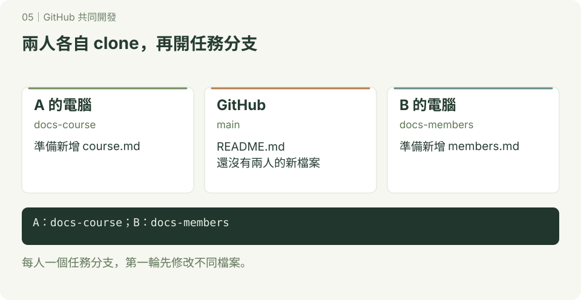
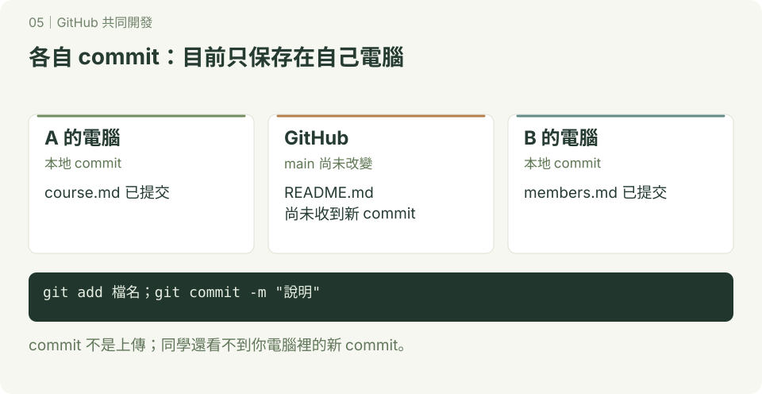
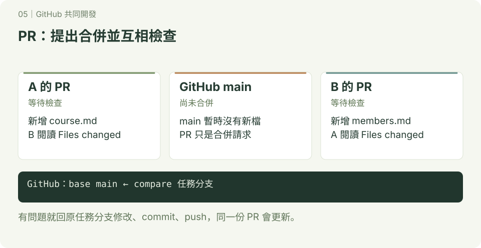
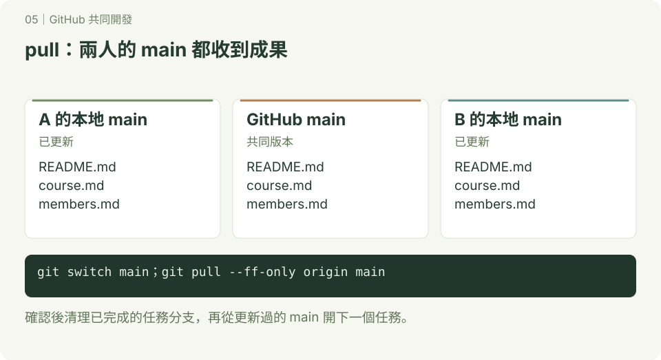

GitHub 共同開發
本章附 SVG 圖解；可先讀 互動版使用說明，再用瀏覽器開啟 docs/index.html#collaboration/1，按下一步觀察變化。GitHub 的 README 顯示靜態圖，下載教材後即可離線操作互動版。
Git 管理版本，GitHub 讓大家分享 Git 儲存庫、討論修改、審查與合併成果。先完成 分支練習，並閱讀 GitHub 基本操作 準備帳號、clone 與登入方式，再做本章。
1. 選一種合作方式
| 方式 | 適合情況 | 操作流程 |
|---|---|---|
| GitHub 網頁編輯 | 文件、小幅文字修正 | 開新分支 → 網頁編輯並 commit → PR → 同學檢查 → 合併 |
| 同組共用一個儲存庫 | 小組作業，有寫入權限 | clone → 個人任務分支 → commit → push → PR → 合併 |
| Fork 到自己帳號 | 沒有原專案寫入權限，例如向老師交作業 | Fork → clone 自己的副本 → 分支 → push → 向原專案送 PR |
PR（Pull Request）是提出合併請求，不是已經合併；push 也只是上傳 commit，不會自動把功能分支合併到 main。
我們使用 GitHub flow：小任務開分支，完成後送 PR，檢查後合併，再更新本地 main。這是本教材的小組合作約定；若要由 GitHub 強制執行，管理者需另行設定適用的分支保護或 ruleset。
2. 最簡單：只用 GitHub 網頁
先由 A 同學建立名為 class-team-demo 的練習儲存庫，勾選新增 README，確認預設分支是 main。透過儲存庫 Settings 中的 Collaborators／存取管理邀請 B 同學，B 接受邀請；不同帳號類型可能顯示不同名稱。
接著由 B 操作：
- 在分支選單從 main 建立
docs-class-intro，並確認目前選到這個分支。 - 開啟 README.md，按編輯按鈕，新增一段班級介紹。
- 選 Commit changes，訊息填「新增班級介紹」，提交到 docs-class-intro。
- 到 Pull requests → New pull request，選 base: main、compare: docs-class-intro，檢查差異後建立 PR。
- A 打開 PR 的 Files changed，確認文字；需要修改時留下意見。B 在同一分支繼續修改與提交，PR 會更新。
- A 確認後選 Merge pull request，再確認合併。若只有其他合併方式可選，先檢查儲存庫設定；本章練習使用一般 merge。
- 回到 main，確認新內容出現，再刪除已完成的分支。
先猜一猜：第 3 步提交完成時，main 的內容會改變嗎？答案是不會，直到 PR 合併後才會改變。
3. 兩人實作：本地開發，再用 PR 整合
步驟一：每人 clone 一份

沿用上一節的儲存庫與邀請。兩人各自在自己的電腦操作，使用終端機或 Git Bash。將網址中的 OWNER 換成 A 的 GitHub 帳號；不要原樣輸入。
git clone https://github.com/OWNER/class-team-demo.git
cd class-team-demo
git branch --show-current預期目前分支是 main。clone 會自動把這個網址命名為 origin。
若 push 需要驗證，使用已設定的 SSH，或 HTTPS 搭配 GitHub 登入／憑證工具或 personal access token；GitHub 帳號密碼不能作為 HTTPS Git 操作的密碼。設定方式見 SSH 與 憑證。
步驟二：A 新增課程介紹

操作位置：A 電腦的 class-team-demo。開始前確認工作區乾淨；若有修改，先處理自己的內容再切換。
git status --short
git switch main
git pull --ff-only origin main
git switch -c docs-course
printf '# 課程介紹\n本課程練習 Git 與 GitHub。\n' > course.md
cat course.md最後一行讓你看新檔案內容。一般 git diff 不顯示未追蹤的新檔，所以先讀檔，再於下一步用 git diff --staged 檢查暫存內容。
git add course.md
git diff --staged
git commit -m "新增課程介紹"
git push -u origin docs-course預期 GitHub 上有 docs-course 分支。-u 設定追蹤關係；之後在這個分支通常可直接 git push。
步驟三：B 新增小組成員

操作位置：B 電腦的 class-team-demo。B 不必等 A 完成，可以從自己的 main 開始。
git status --short
git switch main
git pull --ff-only origin main
git switch -c docs-members
printf '# 小組成員\n- A 同學\n- B 同學\n' > members.md
git add members.md
git diff --staged
git commit -m "新增小組成員"
git push -u origin docs-members預期有兩條任務分支，每人只處理自己的檔案。這次故意分開檔案，先練成功流程。
步驟四：互相檢查 PR

操作位置：GitHub 網站。
- A 建立 PR，base 選 main、compare 選 docs-course；B 用 docs-members 建立另一個 PR。
- 標題寫清楚新增什麼，描述寫「修改內容、如何確認、還有哪些未完成」。
- B 看 A 的 Files changed，A 看 B 的 Files changed；確認內容與需求一致。
- 要修正時，在原任務分支修改、commit、push；不用為同一件事再開一個 PR。
- 有寫入權限的人依約定逐一合併兩個 PR，選一般 Merge pull request。若有檢查失敗或衝突，先處理後再合併。
互相檢查，不只按 Approve：實際閱讀新增內容；程式專案還要依專案說明執行與測試。
步驟五：兩人都更新自己的 main

先在 GitHub 確认兩個 PR 都已合併。兩人各自在自己的 class-team-demo 執行：
git switch main
git pull --ff-only origin main
ls
git status --short預期都看得到 course.md 與 members.md，status 沒有輸出。GitHub 合併不會自動更新你的電腦。
A 執行 git branch -d docs-course，B 執行 git branch -d docs-members。GitHub 可刪掉兩個遠端任務分支；本地再用 git fetch --prune 更新遠端追蹤紀錄。
完成標準：main 上有兩人的成果；有兩份合併完成的 PR；兩人的本地 main 都已更新。
4. 沒有寫入權限：接著學 Fork
本章的共用儲存庫方式需要寫入權限。向老師或其他人的專案提出修改時，可以先 Fork 到自己的帳號，再送 PR。
操作方式已整理成獨立的 第 06 章：用 Fork 交作業，包含 origin／upstream、PR 方向與同步的完整練習。
5. 同學改了 main，我的任務還沒完成怎麼辦？
以下以仍在開發的 docs-members 為例；只在該分支尚未刪除時使用。先把自己的修改提交，確認工作區乾淨，再在 class-team-demo 操作：
git switch docs-members
git fetch origin
git merge --no-edit origin/main沒有衝突時，重新檢查功能，再 git push。如果出現衝突，Git 會列出檔案：
- 用
git status找出有衝突的檔案，與同學確認要保留的內容。 - 編輯檔案，處理
<<<<<<<、=======、>>>>>>>之間的內容，移除標記。 git add 實際檔名，再git commit -m "整合 main 並解決衝突"。- 執行專案檢查，再 push，PR 會更新。
如果決定暫停這次合併，在合併仍進行中時用 git merge --abort。不要在沒有弄清楚內容時叫 AI 全部選 ours 或 theirs。
6. 小組約定與自己做
- 一個任務一條分支，不讓兩人同時把不同任務 push 到同一條功能分支。
- main 保留可使用的版本；日常修改走 PR。
- 開始任務前更新 main；送 PR 前閱讀差異與檢查結果。
- 第一輪分開檔案，熟悉後再練同一檔案的衝突處理。
換你們做：A 新增 schedule.md，B 新增 contact.md，各自開分支、送 PR、互相檢查、合併。完成後交換角色，說明 push、PR、merge、pull 各做了什麼。
參考：GitHub flow、建立 PR、Fork 儲存庫、GitHub 驗證方式。